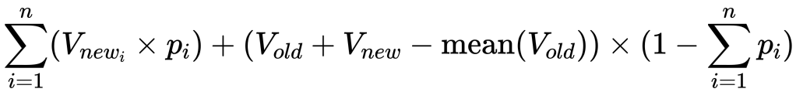
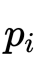
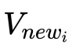

ZXHProj
## ZXH Project
#### zxhproj is a medical image computing platform, being developed and maintained by Xiahai Zhuang since 2004. Based on it, several image registration and segmentation tools have been developed, such as multivariate mixture model, cardiac segmentation, locally affine registration method (LARM), spatially encoded mutual information (SEMI), as well as other image/vector field processing tools. The tools work with nifty (nii/nii.gz) and gipl short int data formats.
#### The project can be downloaded [here](http://www.sdspeople.fudan.edu.cn/zhuangxiahai/0/zxhproj/).
## Documentation
### General
These options can be used in most of the commands below.
- `-v b` (_int_, optional) - %@1@% whether to use the verbose mode or not. `-v 0` means all the standard outputs (except the error alerts) are hidden.
- `-notsaveimage` (_flag_, optional) - the result images will not be saved if it is activated, but other files (such as transformation files) will still be saved according to the saving rules.
- `-H` (_flag_) - show the help file of the tool
### zxhimageop
```
zxhimageop [options] (maximum of images is 10, all input images are of the same dimension and resolution)
```
One of the following two kinds of input options is necessary.
- `-int shortIntImage` (_path_, one out of two) - input short image
- `-float floatImage` (_path_, one out of two) - input float image
- `-o savename` (_prefix_, optional) - prefix or path for the output image; if no `-o` is offered, then the input file will be replaced
- `-bk f` (_float_, optional) - %@0@% background value
#### Operations
- `-gau x [y z]` (_float_, optional) - Gaussian blur, σ=`x` `mm`, {{if `y, z` exists, they represent the parameter σ in different direction.}}
- `-4dto3d` (_flag_, optional) - change 4D image to 3D, save as `savename_0.nii.gz`, `savename_1.nii.gz`, ..., `savename_T.nii.gz`
- `-cineto4d n [g]` (_int_, _float_ or _str_, optional) - cine multislices to 4D
- `n`: number of frames, `i=0` means single slice (2D), `i=-1` means already 4d;
- `g`: temporal spacing in milliseconds if a _float_ number is given; if it is a _str_, it should be a _path_ with format `*.TTT` including `num, trigger times` from matlab or with format `*.txt` including just trigger times
- `-3dto4d from to` (_int_, optional) - change 3D images to a 4D, files with name `%s_%d.nii.gz` are taken into account; the first frame is in `-int` or `-float` and the index number is a number between `from` and `to`
- `-phase f` (_float_, optional) - generate phase image `_phi.`, orientation images `_h1f.`,`_h2f.`,`_h3f.` using scaling f, if short, {{multiply 10000}}
- `-phase2d f` (_float_, optional) - generate phase image _phi., orientation images `_h1f.`,`_h2f.` using scaling f, if short, {{multiply 10000}}
- `-bi f` (__, optional) - Threshold binary image, intensity < f all set to background -bk
- `-BI f` (__, optional) - Threshold binary image, intensity > f all set to background -bk
- `-er i` (__, optional) - erosion i steps, notice that one step erosion means kernal radius should be 0
- `-ER f` (__, optional) - erosion using kernal f lengths
- `-ERs l b f` (__, optional) - erosion using kernal l lengths on label f and background b
- `-op i` (__, optional) - open on i steps
- `-OP f` (__, optional) - open by -ER f followed by -DI f
- `-di i` (__, optional) - dilation i steps, all voxel size unit
- `-cl i` (__, optional) - close on i steps
- `-DI f` (__, optional) - dilation using kernal f lengths
- `-DIs l b f` (__, optional) - dilation using kernal l lengths on label f and background b
- `-CL f` (__, optional) - close by -DI f followed by -ER f
- `-protect f` (__, optional) - protect volume from being non foreground, if no foreground point, set a foreground mask on graycenter with radius f mm
- `-vr f f` (__, optional) - intensity value range from f<=v<=f for operation below, repeatible input
- `-vc i i i` (__, optional) - voxel on coordinate of image grid for operation below, or show intensity
- `-vwvtk s f` (__, optional) - world coordinates from vtkPolyData, s, assign to value f
- `-vmaskimage image f f` (__, optional) - use mask image, for voxels whose corresponding in mask image have intensity between f and f
- `-va f` (__, optional) - intensity value in range add f
- `-vm f` (__, optional) - intensity value in range multiply value f
- `-vs f` (__, optional) - intensity value in range assign to value f
- `-VS f` (__, optional) - intensity value in range assign to value f, otherwise set to background -bk
- `-rescale f f` (__, optional) - rescale the intensity range to [f,f]
- `-boundmask mask` (__, optional) - use intensity range in mask as the up and low bound of intensity, outside range set to bound value
- `-boundrange f f` (__, optional) - use intensity range as the up and low bound of intensity, outside range set to bound value
- `-toi` (__, optional) - save as short int images, can save multi images
- `-tof` (__, optional) - save as float images, can save multi images
- `-raw` (__, optional) - remove orientation and origin info
- `-imageinfosrc s [t]` (__, optional) - source short int image used to set image info, default using 0,0,0 as reference, t=='c' center, t=='uppercorner'
- `-imageinfosrc2 s` (__, optional) - source short int image used to set image info, including voxel spacing
- `-orginalintensity` (__, optional) - remove rescale slope/intercept to original intensity
- `-switchlr [0/1]` (__, optional) - change image to switch between left-hand (0 and right-hand (1) coordinate)
- `-flip1` (__, optional) - flip image volume on first dimension, -flip2 and -flip3 on 2nd and 3rd dimension
- `-sum` (__, optional) - sum up the intensity of all input short or float images, no need for same image info -- saved using first image, linear interpolation
- `-avg` (__, optional) - average the intensity
- `-max/-min` (__, optional) - todo, save max/min intensity of all input images
- `-mul` (__, optional) - multiply the intensity of all input short or float images
- `-minus` (__, optional) - nimus the intensity, can save multi images
- `-sqrt` (__, optional) - sqrt the intensity, can save multi images
- `-or` (__, optional) - if all image intensity bk then put bk, else foreground; nearest interpolation
- `-sub` (__, optional) - regard binary image foreground as point set, first set subtract later sets
- `-sec` (__, optional) - intersection of all point sets
### zxhreg
> This tool from ZXHPROJ provides the affine/rigid registration, please cite the paper below:
> "Zhuang, X., et al.: A Nonrigid Registration Framework Using Spatially Encoded Mutual Information and Free-Form Deformations, IEEE Transactions on Medical Imaging, 30(10): 1819-1828, 2011."
```
zxhreg -target targetImagePath -source sourceImagePath -o outputPrefix [options]
```
#### Options
- `-target image` (_path_) - target image, sometimes referred to as {{test image}} or fixed image
- `-source image` (_path_) - source image, sometimes referred to as {{reference image}} or moving image
- `-o prefix` (_prefix_) - savename string for saving transformed source image, the prefix for the file names; Possible extensions: `.AFF`, `.nii.gz`.
- `-Reg n` (_int_, optional) - %@1@% number of registration epochs
- `-sub x y z [t]` (_float_, optional) - %@3 3 3@% sampling spacing; in unit `mm{{/ms}}` if positive; in unit `pixels` if negative; can be repeated for different registration epochs (see example)
- `-steps n [n...]` (_int_, optional) - %@50@% number of iterations for the optimization; multiple numbers should be given when `-Reg` is bigger than 1
- `-length l [l...]` (_float_, optional) - %@{{1}}@% step length or learning rate; multiple numbers should be given when `-Reg` is bigger than 1
{{What will happen if say we run `zxhreg -target * -source * -o * -rig -Reg 3 -sub 8 8 8 -sub 3 3 3 -steps 200 -length 2 1 -pre *`? What are the spacings, steps and lengths for each epoch? }}
- `-smoothr r` (_float_, optional) - %@1, i.e. no smoothness@% Gauss smoothing on the source image in registration; in {{`mm`}}
- `-smootht r` (_float_, optional) - %@1, i.e. no smoothness@% Gauss smoothing on the target image in registration; in {{`mm`}}
- `-maskr image` (_path_, optional) - mask image on the source image, unable to accelerate the process
- `-maskt image` (_path_, optional) - mask image on the target image
- `-pre XY` (_options_, optional) - %@11@%
- X: the rotation centre options
- 1 centre on target image centre
- 2 centre on target image gray level centre
- 3 centre on source image centre
- 4 centre on source gray level centre
- Y: pre-alignment options
- 1 identity
- 2 pre-aligned by image centre points
- 3 pre-aligned by image gray level centres
Options of the transformation type (one out of three):
- `-rig` (_flag_, one out of three) - %@rigid registration@%
- `-scale` (_flag_, one out of three) - rigid + scale registration
- `-aff` (_flag_, one out of three) - 12dof affine registration
Options of the similarity metrics:
- `-cc` (_flag_, optional) - square cross correlation/coefficient similarity
- `-ssd` (_flag_, optional) - minus sum square difference
- `-je` `-JE hb` (_flag_, _int_, optional) - joint entropy similarity with hb histogram bins
#### Example
```
zxhreg -target target.nii.gz -source source.nii.gz -o -rig output -Reg 2 -sub 8 8 8 -sub 3 3 3 -steps 200 200 -length 2 1 -pre 23 -maskt mask_on_target.nii.gz -je
```
### zxhregaff
```
zxhregaff -target targetImagePath -source sourceImagePath -o outputPrefix [options]
```
#### Options
- `-target image` (_path_) - target image, sometimes referred to as {{test image}} or fixed image
- `-source image` (_path_) - source image, sometimes referred to as {{reference image}} or moving image
- `-o prefix` (_prefix_) - savename string for saving transformed source image, the prefix for the file names; Possible extensions: `.AFF`, `.nii.gz`.
- `-sub x y z [t]` (_float_, optional) - %@3 3 3@% sampling spacing; In unit `mm{{/ms}}` if positive; in unit `pixels` if negative.
- `-maskr image` (_path_, optional) - mask image on the source image, unable to accelerate the process
- `-maskt image` (_path_, optional) - mask image on the target image
- `-Reg n` (_int_, optional) - %@1@% number of registration epochs
- `-pre X` (_options_, optional) - %@_1_@% pre-alignment options
- _1_ identity
- _2_ pre-aligned by image centre points
- _3_ pre-aligned by image gray level centres
### zxhtransform
**For all usages, one of these flags should be picked.**
- `-linear` (_flag_, one out of three) - %@interpolate with linear interpolation@%
- `-nearest` (_flag_, one out of three) - interpolate with nearest interpolation
- `-bspline` (_flag_, one out of three) - interpolation with b-spline, only work in 3D cases
**Usage 1**
The target image grid is regarded as referenced saving image grid in a backward transformation while the source image grid is regarded as referenced saving image grid in a forward transformation. All transformations are backward transformations by default.
The source image is transformed.
```
zxhtransform targetImagePath sourceImagePath -o saveFileName [options]
```
#### Options
- `-o svename` (_path_) - file name fot the transformed source image; prefix or the whole file name
- `-bg [i]` (_int_, optional) - background value; no `i` means using closest point
- `-n i` (_int_, optional) - %@0@% number of transforms, max = 100
- `-t transformation` (_path_, optional) - transformations, can be repeated to input multi-transformations (see example)
- `-d x y z` (_float_, optional) - GIPL image for displacement field of `x, y, z, t` dimensions, repeatible
- `-aligncenter` (_flag_, optional) - used when using `-n 0` when source and target images are aligned with the image centers
- `-forward` (_flag_, optional) - inverse the transformations using bspline; for affine transformations the inverse matrix is used
- `-fillradius r` (_int_, optional) - %@20@% number of pixels for filling the gap after inverse transformations, only used when `-forward` is activated
#### Example
```
zxhtransform target.nii.gz source.nii.gz -o savename -n 3 -t tranformation3.FFD -t tranformation2.AFF -t tranformation1.AFF
```
**Usage 2**
Rigid transform image by changing the world matrix in header.
```
zxhtransform -forwardrigid/-backwardrigid inputImagePath saveFileName rigid.AFF
```
E.G.: For test and reference images, use {{`-forwardrigid`}} to correct the test into coordinate of reference image.
**Usage 3**
```
zxhtransform inputImagePath -o saveFileName -functionname [options]
```
#### Options
- `-o savename` (_path_) - file name fot the output image; prefix or the whole file name
- `-entropy rs sub` (_functionname_, _float_, one out of nine) - generate entropy image &times; 1000 using radius size `rs` patch and `sub` sampling, pixel unit, can use with -mask m
- `-gengrid f f f` (_functionname_, _float_, one out of nine) - generate a grid image using grid spacing `f`&times;`f`&times;`f` `mm`, gray value 1000
- `-resample f f f` (_functionname_, _float_, one out of nine) - resample image with `f` &times; original pixel size as new pixel size for each dimension
- `-roi xf xt yf yt zf zt` (_functionname_, _float_, one out of nine) - save region of interest image grid index
- `-roibox center.txt length` (_functionname_, _float_, one out of nine) - save region of interest center, one line 4 world coordinates, and side length mm
- `-addroi xf xt yf yt zf zt` (_functionname_, _float_, one out of nine) - add slices to region of interest image grid index, {{minus is to reduce}}
- `-cropmask` (_functionname_, one out of nine) - crop the mask image to minimum of ROI
- `-stack` (_functionname_, one out of nine) - stack one slice with thickness into three-slice 3D image
- `-resave` (_functionname_, one out of nine) - resave image using redefined spacing and extension (see below)
- `-spacing f f f` (_float_, optional) - %@original spacing@% pixel spacing in `mm` for `x, y, z` dimensions, minus for pixelsize
- `-extent f f f` (_float_, optional) - %@original extension@% image extension in `mm`, from `0` to `f` for `x, y, z` dimensions
- `-reorient [qf qb qc qd]` (_float_, optional) - reorient orthogonal coordinate image to identity orientation rotation matrix or set the quaternion rotatoin parameters
- `-reorientimg sourceimg` (_path_, optional) - reorient to the same orientationn as the source image
- `-intensitytransform/-it refimage num_block/patchsize` (refimage: _path_, num_block/patchsize: _int_, optional) - transform intensity using the refimage
- `-boundrange i i` (_int_, optional) - intensity bound range to the refimage, intensity outside boundrange set to bound
- `-MI pdf hb` (_int_, optional) - the _Mutual Information_ of the image
- pdf: %@1@% the method used to compute the pdf
- 1 = PDFType ParzenWindow BSpline
- 2 = classical binning PDFType_Histogram
- hb: %@64@% number of histogram bins
- `-itl LabelImg M` (LabelImg: _path_, M: _modality_ chosen from `ToCT` and `ToMR`, optional) - transform intensity using whole heart LabelImg to modality M, intensity will be first rearranged into `0`-`1800` for mr, to `-200`-`1600` for ct
- itl = {{`\sum_{i=1}^n(V_{new_i} \times p_i) + (V_{old} + V_{new} - \hbox{mean}(V_{old})) \times (1 - \sum_{i=1}^n p_i)`}}{{`sum_i^n(V_new_i * p_i*pn) + (V_old+V_new-mean(V_old)) * (1-sum_i^n p_i*pn)`}}
- itl = 
where,  = Normalize(GaussianSmooth(label)), n=|{LV, RV, LA, RA, Myo, PA, Aorta}|= 7,
and  are:
|substruct|Myo|LA|LV|RA|RV|Aorta|PA|BK|
|:--:|----|----|----|----|----|----|----|----|
|CT|129.67|410.96|372.11|166.59|183.72|468.26|266.44|-65.66|
|MR|465.90|716.39|811.65|725.98|781.55|802.40|865.66|308.01|
- `-itl2 AtlasLabel TargetImage TargetLabel` (_path_, optional) - transform intensity of atlas to target specific image using whole heart AtlasLabel and the target image and label
### zxhMajorVote
```
zxhMajorVote nLabelImage type inputListFilename saveFilename [options]
```
#### Parameters
- `type` (_int_) - the type of fusion
- 1 fuse all
- 2 sort according to `rankvalue` and save from the best {{`1:2:N`}}, including `N`
- 3 sort and fuse `1:1:N`
- 4 sort
- `inputListFilename` (_path_) - in this text file each line contains `segresult.nii.gz rankvalue`
#### Options:
- `-whs` (_flag_, optional) - all input label image will be first process as WHS, for label fusion about MYO, Aorta, PA
- `-whsla` (_flag_, optional) - process pul-veins/appendage to LA then all label will be first process as WHS, for label fusion
- `-posterior/-post` (_flag_, optional) - Used only for `type = 1`, it saves posterior prob images &times; 1000 in short-int format with file name `saveFilename_Label%d.nii.gz` (where `%d` represents the label value).
## Tutorial
This tutorial provides the basic steps for one to register images using `ZXHProj`.
### Step 1: install the platform and get it working
The tools can be downloaded at [the homepage](http://www.sdspeople.fudan.edu.cn/zhuangxiahai/0/zxhproj/). Installation can be easily done by adding the folder's path to the environment variable `$PATH`.
#### On `MacOS` or `Linux`
This can be done by adding the following line in `.bashrc` or `.bash_profile` in the main folder.
```
export $PATH=$PATH:path_to_zxhtools
```
#### On `Windows`
This can be done by the following steps. (you can refer to [english version](http://www.chem.gla.ac.uk/~louis/software/faq/q1.html#winXP) or [chinese version](https://jingyan.baidu.com/article/8ebacdf02d3c2949f65cd5d0.html) for details)
- Open the control panel. You can do that by entering `control` in `Run...`.
- Find `System & Security` &rarr; `System` &rarr; `Advanced System Settings` and click it. It should pop out a window.
- Choose the tab `Advanced` and click the button `Environment Variables`.
- Select the variable `PATH` and click the button `Edit`. Add the path to our tools to the variable `PATH`. Multiple paths are separated by `;`.
### Step 2: sort out the files
Two medical images to be registrated are necessary, namely `source.nii.gz` and `target.nii.gz`.
An additional file is commonly required: the segmentation labels for the source (or the target) image. This will be used in optional tasks like cropping (`Step 4`) and masking (`Step 8`). In this tutorial we will assume that we only have the gold standards for the source image segmentation, namely `source_seg.nii.gz`.
If the segmentation results for the target image is available instead, one may directly use the dilated segmentation as the `-maskt` in `Step 8` and other usages are the same.
### Step 3: resample (optional) and clip
The images are commonly resampled into isotropic images with a spacing of 2&times;2&times;2 `mm`. This can be done by using the following command.
```
zxhtransform *.nii.gz -o *.nii.gz -resave -spacing 2 2 2 -linear
```
Clipping, however, is of more importance. Clipping means to narrow down the intensity range of an image.
It is a must in the following circumstances:
1. If the image only includes the medical information within a border, like in the slice below. Clipping can eliminate the disturbance from the border.

1. If one doesn't want the model to pay too much attention on the outliers.
The common intensity range of interest is `(-1000, 2000)` for a `CT` image and `(0, 500)` for an `MR` image.
Clipping can be done by the following commands. (Take the commands for a `CT` image as an example)
```
zxhimageop -int *.nii.gz -o *.nii.gz -vr -10000 -1000 -vs -1000
zxhimageop -int *.nii.gz -o *.nii.gz -vr 2000 10000 -vs 2000
```
Sometimes, when `-pre *3` is used, the grey level center is influenced by the background as the background value is not zero. In this circumstance, a shift of intensity is needed. We may use the following command to shift a background value `-10` to `0`.
```
zxhimageop -int *.nii.gz -o *.nii.gz -vr -10000 10000 -va 10
```
### Step 4: crop out the ROI (optional)
Cropping the regions of interest out is a skill to shrink the images and to accelarate the registration process.
But first of all, one needs to tell the computer where the ROI locates. This can be done by the `-roi` or `-roibox` options in the `zxhtransform` tool.
```
zxhtransform *.nii.gz -o cropped -roibox center.txt 128
```
where `center.txt` contains one line with world coordinates and `128mm` is the length for the sides of the cube.
However, in most of the cases, we demand for a tighter and more accurate ROI. This will make use of the segmentation result we mentioned in `Step 2`. The commands are as follows: we first crop the dilated segmentation and use this cropped region as ROI to crop the source and target images.
```
zxhimageop -int source_seg.nii.gz -o dilated -DI 20
zxhtransform dilated.nii.gz -o crop_region -cropmask
zxhtransform crop_region.nii.gz source.nii.gz -o source_cropped -bg -1000
zxhtransform crop_region.nii.gz target.nii.gz -o target_cropped -bg -1000
zxhtransform crop_region.nii.gz source_seg.nii.gz -o label_cropped -nearest
```
`-1000` here is the lowest intensity for `CT` images, note that this value should be modified for other modalities.
### Step 5: rigid transformation
The first step of registration is always rigid transformation as it has the widest capture range and large step lengths won't cause stupid transformations.
What's more, bone registrations are also mostly based on rigid transformations. (For bone registration, one can skip `Step 6` and `Step 7`)
The following command can be used to perform a two-stage rigid transformation.
```
zxhreg -rig -target target.nii.gz -source source.nii.gz -o rigid -Reg 2 -sub 8 8 8 -sub 3 3 3 -steps 200 200 -length 2 1 -pre 23 -MI
```
This line of command obtained a nice result in registering hip `CT` and `MR` pairs.
Remember to add the option `-notsaveimage` if only the transformation `rigid.AFF` is necessary while the transformed image `rigid.nii.gz` is not needed.
### Step 6: affine transformation
Affine transformation is a typical type of transformation. As it has a wider capture range than the deformable registrations, it is recommended to be used before deformable registrations like an FFD transformation and is also recommended in intra-subject registrations. (For intra-subject registration, one can skip `Step 7`)
The tool `zxhregaff` is better than `zxhreg -aff` in practice as it has been finetuned for the affine transformation only.
```
zxhregaff -aff -target target.nii.gz -source source.nii.gz -o affine -Reg 2 -sub 8 8 8 -sub 6 6 6 -steps 200 50 -length 1 0.5 -pre 0 rigid.AFF
```
Normally the spacings `-sub` and step lengths `-length` are smaller than those for the rigid transformation.
Remember to add the option `-notsaveimage` if only the transformation `affine.AFF` is necessary while the transformed image `affine.nii.gz` is not needed.
### Step 7: FFD transformation
FFD transformation is a commonly used deformable transformation.
LARM, as another deformable registration method, can also be simulated by `zxhreglarm`. See article
> Zhuang, X., Rhode, K., Arridge, S., Razavi, R., Hill, D., Hawkes, D. J., Ourselin, S.: An atlas-based segmentation propagation framework using locally affine registration-Application to automatic whole heart segmentation. International Conference on Medical Image Computing and Computer Assisted Intervention (MICCAI), 5242: 425-433, 2008.
The tool for the FFD transformation, as a special case of spacially encoded mutual information transformation, is named as `zxhregsemi0`.
As the previous transformation in `-pre` should be an `FFD` transformation, we have to use the transformed image `affine.nii.gz` this time. **Note that `-notsaveimage` should be removed in the affine transformation or one can create the transformed image by `zxhtransform` manually.**
```
zxhregsemi0 -target target.nii.gz -source affine.nii.gz -o ffd -Reg 3 -ffd 80 80 80 -sub 8 8 8 -ffd 40 40 40 -sub 6 6 6 -ffd 20 20 20 -sub 6 6 6 -steps 200 -length 2 2 1 -bending 0.0001
```
This three-stage FFD transformation includes these three stages:
1. An FFD registration with 80&times;80&times;80 control points and a sampling spacing of `8 mm` when the similarity is computed. The iteration goes for `200` steps if the similarity doesn't converge and the step length is `2`.
1. An FFD registration with 40&times;40&times;40 control points and a sampling spacing of `6 mm` when the similarity is computed. The iteration goes for `200` steps if the similarity doesn't converge and the step length is `2`.
1. An FFD registration with 20&times;20&times;20 control points and a sampling spacing of `6 mm` when the similarity is computed. The iteration goes for `200` steps if the similarity doesn't converge and the step length is `1`.
Remember to add the option `-notsaveimage` if only the transformation `ffd.FFD` is necessary while the transformed image `ffd.nii.gz` is not needed.
### Step 8: using a mask (optional)
A mask is commonly used to accelerate the registraion process and to focus on the interested region. Mask on source images won't accelerate the process as the coordinates should be transformed before knowing whether it is in the mask or not, hence `-maskr` is not recommended.
In order to capture the miss-aligned parts of the source image, the mask for the target should be dilated from the organ we pay attention to.
Previously we have the dilated segmentation results for the source image, we now need to tranform it to the target space and take this as a mask on the target image.
Note that the transformations are backward transformations, which means the transformations should be arrange in reversed order.
```
zxhtransform target.nii.gz dialated.nii.gz -o mask -n 2 -t ffd.FFD -t affine.AFF -nearest
zxhregsemi0 -target target.nii.gz -source affine.nii.gz -o ffd -Reg 1 -ffd 20 20 20 -sub 4 4 4 -steps 100 -length 1 -bending 0.0001 -pre 0 ffd.FFD -maskt mask.nii.gz
```
### Step 9: examples
Now let's see a few examples on how to register two images.
#### Example 1: bone registration
This example shows the commands used to register bone images `ct.nii.gz` and `mr.nii.gz`.
```
zxhimageop -int ct.nii.gz -o ct_clip.nii.gz -vr -10000 -400 -vs -400
zxhimageop -int ct_clip.nii.gz -o ct_clip.nii.gz -vr 1200 10000 -vs 1200
zxhimageop -int ct_clip.nii.gz -o ct_clip_shift.nii.gz -vr -10000 10000 -va 400
zxhimageop -int mr.nii.gz -o mr_clip.nii.gz -vr -10000 500 -vs 500
zxhimageop -int mr_clip.nii.gz -o mr_clip.nii.gz -vr 1000 10000 -vs 1000
zxhimageop -int mr_seg.nii.gz -o mask_dilated20.nii.gz -DI 20
zxhreg -rig -target mr_clip.nii.gz -source ct_clip_shift.nii.gz -o output -Reg 2 -sub 8 8 8 -sub 3 3 3 -steps 200 200 -length 2 1 -pre 23 -MI -maskt mask_dilated20.nii.gz
```
Then the file `output.nii.gz` contains an image with a similar shape as `mr.nii.gz`.
#### Example 2: intra-object registration
This example demonstrates how we can register the CT image and MR image of a same patient.
```
zxhtransform ct.nii.gz -o ct_resampled.nii.gz -resave -spacing 2 2 2 -v 0
zxhtransform mr.nii.gz -o mr_resampled.nii.gz -resave -spacing 2 2 2 -v 0
zxhimageop -int ct_resampled.nii.gz -o ct_clip.nii.gz -vr -10000 -1000 -vs -1000
zxhimageop -int ct_clip.nii.gz -o ct_clip.nii.gz -vr 2000 10000 -vs 2000
zxhimageop -int mr_resampled.nii.gz -o mr_clip.nii.gz -vr -10000 0 -vs 0
zxhimageop -int mr_clip.nii.gz -o mr_clip.nii.gz -vr 500 10000 -vs 500
zxhreg -rig -target mr_clip.nii.gz -source ct_clip.nii.gz -o rigid -Reg 2 -sub 10 10 10 -sub 8 8 8 -length 3 1.5 -steps 200 200 -pre 13 -notsaveimage -v 0
zxhregaff -aff -target mr_clip.nii.gz -source ct_clip.nii.gz -o affine -pre 0 rigid.AFF -Reg 2 -sub 8 8 8 -sub 6 6 6 -length 1 0.5 -steps 200 50 -notsaveimage -v 0
zxhtransform mr_clip.nii.gz ct_clip_shift.nii.gz -o output -n 1 -t affine.AFF -bg -1000 -v 0
```
#### Example 3:
This example reveals the general process of an inter-subject registration. Note that cross-modality registration may be easier by performing a combination of an inter-subject intra-modality registration and an itra-subject inter-modality registration.
```
zxhtransform patient1.nii.gz -o patient1_resampled.nii.gz -resave -spacing 2 2 2 -v 0
zxhtransform patient2.nii.gz -o patient2_resampled.nii.gz -resave -spacing 2 2 2 -v 0
zxhimageop -int patient1_resampled.nii.gz -o patient1_clip.nii.gz -vr -10000 -1000 -vs -1000
zxhimageop -int patient1_clip.nii.gz -o patient1_clip.nii.gz -vr 2000 10000 -vs 2000
zxhimageop -int patient2_resampled.nii.gz -o patient2_clip.nii.gz -vr -10000 0 -vs 0
zxhimageop -int patient2_clip.nii.gz -o patient2_clip.nii.gz -vr 500 10000 -vs 500
zxhimageop -int patient1_seg.nii.gz -o patient1_mask.nii.gz -DI 20 -v 0
zxhtransform patient1_mask.nii.gz -o patient1_mask.nii.gz -cropmask -v 0
zxhreg -rig -target patient2_clip.nii.gz -source patient1_clip.nii.gz -o rigid -Reg 2 -sub 10 10 10 -sub 8 8 8 -length 3 1.5 -steps 200 200 -pre 13 -notsaveimage -v 0
zxhregaff -aff -target patient2_clip.nii.gz -source patient1_clip.nii.gz -o affine -pre 0 rigid.AFF -Reg 2 -sub 8 8 8 -sub 6 6 6 -length 1 0.5 -steps 200 50 -v 0
zxhregsemi0 -target patient2_clip.nii.gz -source affine.nii.gz -o ffd -Reg 3 -ffd 80 80 80 -sub 8 8 8 -ffd 40 40 40 -sub 6 6 6 -ffd 20 20 20 -sub 6 6 6 -length 2 2 1 -steps 200 -bending 0.0001 -notsaveimage -v 0
zxhtransform patient2_clip.nii.gz patient1_mask.nii.gz -o patient2_mask.nii.gz -n 2 -t ffd.FFD -t affine.AFF -nearest -v 0
zxhregsemi0 -target patient2_clip.nii.gz -source affine.nii.gz -o ffd -Reg 1 -ffd 20 20 20 -sub 4 4 4 -length 1 -steps 100 -bending 0.0001 -pre 0 ffd.FFD -maskt patient2_mask.nii.gz -notsaveimage -v 0
zxhtransform patient2_clip.nii.gz patient1_clip.nii.gz -o output -n 2 -t ffd.FFD -t affine.AFF -bg -1000 -v 0
```
Then the file `output.nii.gz` contains an image with a similar shape as `patient2.nii.gz`.
### Step 10: run a registration process using `python` script
```python
class TOOLS:
def __init__(self, homeDIR):
self.delete = "rm -r" if 'darwin' in sys.platform.lower() or 'linux' in sys.platform.lower() else "del"
if not homeDIR: return
self.toolsList = []
for file in os.listdir(homeDIR):
if os.path.isdir(file): continue
self.toolsList.append(file.split('.')[0])
self.__dict__[file.split('.')[0]] = os.path.join(homeDIR, file)
def __getattr__(self, string): return self.__dict__.get(string, string)
def __call__(self, string, variables={}):
cmd = (self.__getattr__(string.split(' ')[0]) + ' ' + ' '.join(string.split(' ')[1:])).format(**variables)
parts = cmd.split()
for i, part in enumerate(parts):
if i == 0: continue
if os.path.sep in part:
opt = parts[i - 1].strip()
if not os.path.exists(part):
if opt != '-o' and os.path.sep in ''.join(parts[i + 1:]):
print('\n', cmd, sep='')
raise AssertionError("Path doesn't exists: " + part)
elif not os.path.exists(os.path.dirname(part)):
os.system("mkdir -p " + os.path.dirname(part))
elif opt == '-o' and not refresh: return
os.system(cmd)
```
The `class` above is designed to simplify the useage of this platform in `python`.
The following lines are the common usages.
```
zxhtools("zxhtransform {file1} {file2} -o {strPre} -n 2 -t ffd.FFD -t affine.AFF -nearest -v 0", locals())
zxhtools("zxhtransform ct.nii.gz mr.nii.gz -o output -n 2 -t ffd.FFD -t affine.AFF -nearest -v 0")
zxhtools("delete {filename}", locals())
zxhtools("delete ct.nii.gz")
zxhtools("zxhtransform ct.nii.gz mr.nii.gz -o {strPre} -n 2 -t ffd.FFD -t affine.AFF -nearest -v 0".format(strPre='output'))
zxhtools("zxhtransform ct.nii.gz mr.nii.gz -o {strPre} -n 2 -t ffd.FFD -t affine.AFF -nearest -v 0", {'strPre': 'output'})
```